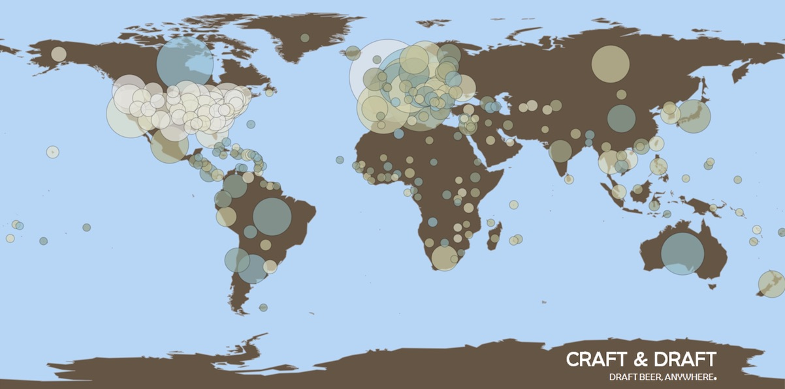

Refilling points
Find the closest and more suitable for your taste
We know that we can still improve in our battle against single-use containers. Our next step is to provide you with a global map of refilling points, available at your mobile phone.
Your refilling point might be closer than you think. In the US, for example, more than 80 percent of adults of legal drinking age live within 10 miles from a brewery.
Find out more at CraftBeer.com
